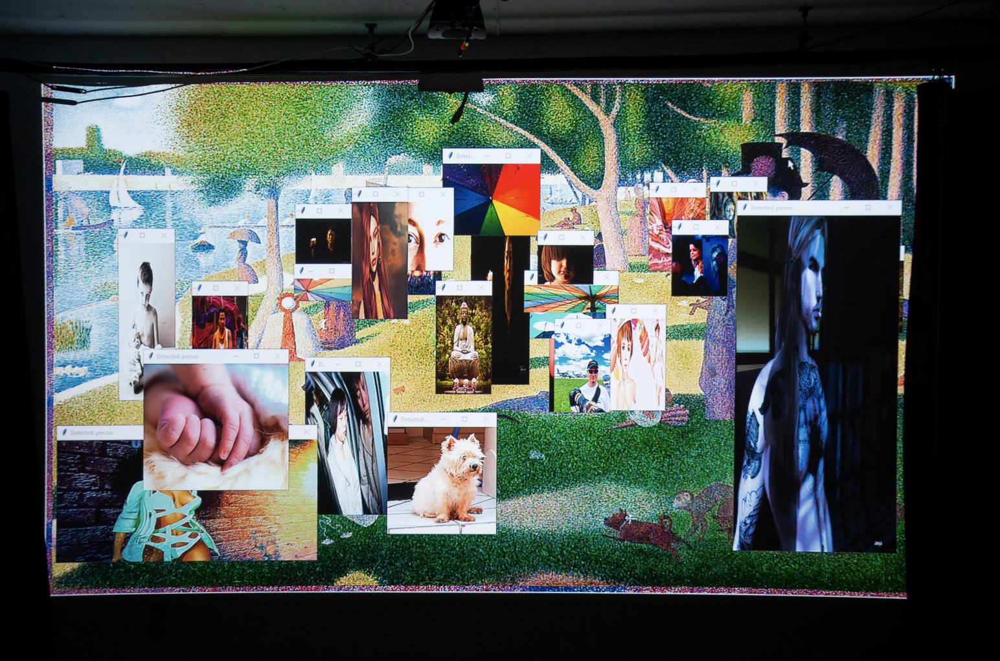

These collages are the result of interweaving fragments of visual culture retrieved from old Flickr image archives. They examine how memory is constructed through digital remnants — stitched together by algorithmic intention and chance.

Each collage explores the tension between documentation and hallucination — pulling the viewer between moments of recognition and unfamiliarity.